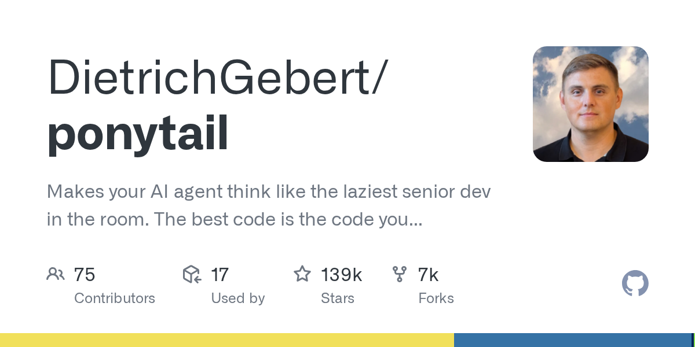

03 GitHub
DietrichGebert/ponytail
코드를 덜 쓰게 만드는 에이전트 보조 규칙
★ 139,391이번 주 +6,179JavaScriptMIT 사내 사용 가능릴리스 v4.10.0 (09.14)최근 활동 09.14테스트 있음예제 있음AGENTS.md 있음

에이전트는 자주 '만들 수 있는 것'을 많이 만든다. 그러나 운영팀과 유지보수팀은 '안 만들어도 되는 것'을 더 반긴다. Ponytail은 이 간극을 겨냥한다. 적은 코드와 적은 의존성으로 끝내는 습관을 에이전트에 심으려는 도구다.
무엇을 하는 물건인가
Ponytail은 코딩 에이전트가 불필요한 코드를 덜 쓰게 만드는 보조 도구다. 새 라이브러리와 감싸는 코드, 부가 파일을 마구 늘리기보다 짧고 단순한 해법을 고르게 유도한다. 저장소 소개도 '가장 좋은 코드는 아예 쓰지 않은 코드'라는 문장으로 방향을 분명히 잡는다. 회의 자료를 새로 꾸미기보다 기존 양식을 손봐 빨리 끝내는 선임의 습관을 옮겨 놓은 셈이다.
스펙과 도입 조건
- JavaScript 저장소다.
- 예제와 테스트를 제공한다.
- Cursor용 hooks.json 연동을 지원한다.
- Grok Build용 skills adapter를 추가했다.
- VS Code Copilot 감지 로직을 포함한다.
- MIT 라이선스를 쓴다.
- 최신 릴리스는 v4.10.0이며 2026년 9월 14일에 나왔다.
이럴 때 쓰면 좋다
- 사내 화면에 작은 입력 기능 하나를 붙일 때 에이전트가 새 프런트엔드 의존성을 마구 추가하는 습관을 줄이고 싶다면 맞다.
- 유지보수 인력이 적은 업무 시스템에서 고객사 요청 한 건을 짧은 수정으로 끝내게 유도하고 싶을 때 유용하다.
- 야간 긴급 패치에서 에이전트가 구조를 크게 흔들지 않고 최소 변경으로 대응하게 만들고 싶을 때 쓸 수 있다.
핵심 기능
- 에이전트가 남긴 git diff를 기준으로 결과를 비교하는 측정 방식을 제시한다.
- Cursor에 hooks.json으로 네이티브 연동한다.
- Grok Build용 native skills adapter를 제공한다.
왜 지금 주목받나
코딩 에이전트가 널리 쓰이면서, 너무 많은 코드를 만든다는 불만도 함께 커졌다. 이 저장소는 더 똑똑한 생성보다 더 적은 생성을 목표로 삼는다. 이번 릴리스에서는 Cursor용 네이티브 훅을 넣어 실제 편집기 연동 장벽을 낮췄다. VS Code Copilot 감지 수정과 Claude.ai 마켓플레이스 검증 통과도 배포 범위를 넓히는 변화다.
사내 도입 체크
- 외부 API 호출은 이 저장소 자체보다 연결하는 에이전트와 편집기에 달렸다. 확인이 필요하다.
- 데이터 반출 범위도 사용하는 에이전트 서비스 정책에 좌우된다.
- 유지보수 주체는 개인 계정 저장소다.
- 상용 코딩 보조 도구를 대체하기보다, 기존 에이전트의 출력 습관을 바꾸는 보조 규칙으로 보는 편이 맞다.
주요 용어
git diff: 코드 변경 전후 차이를 보여주는 기록 의존성(dependency): 프로그램이 함께 설치해 쓰는 외부 라이브러리 훅(hook): 특정 시점에 자동으로 실행되는 연결 규칙 Cursor: AI 코딩 기능을 넣은 코드 편집기 Copilot: GitHub의 AI 코딩 보조 도구
원문 정보
제목: DietrichGebert/ponytail
최근 활동: 2026.09.14